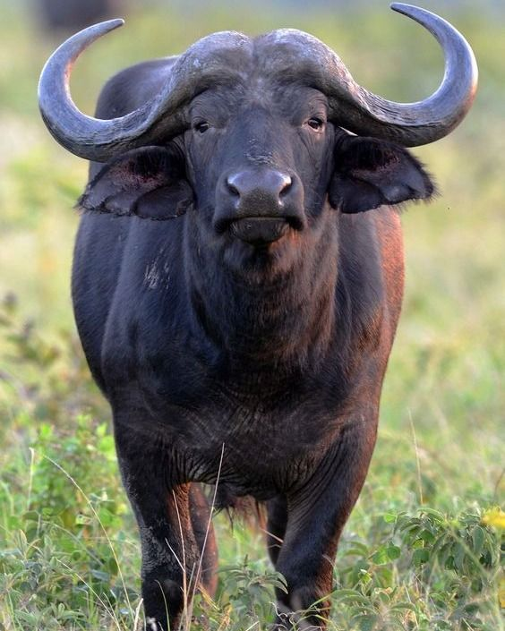
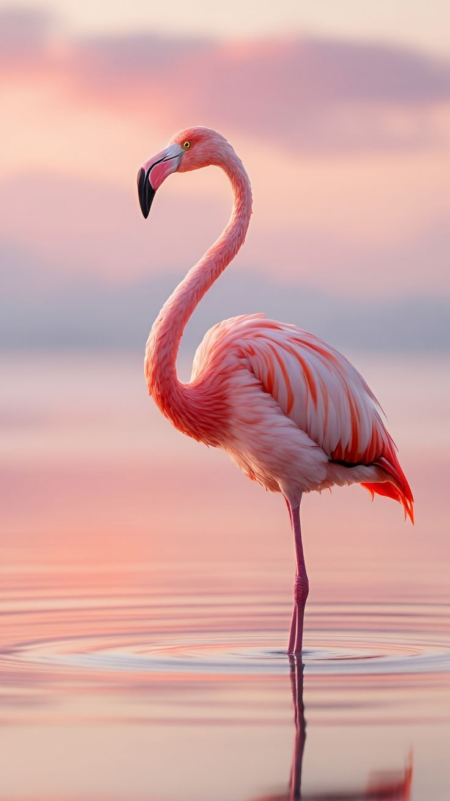
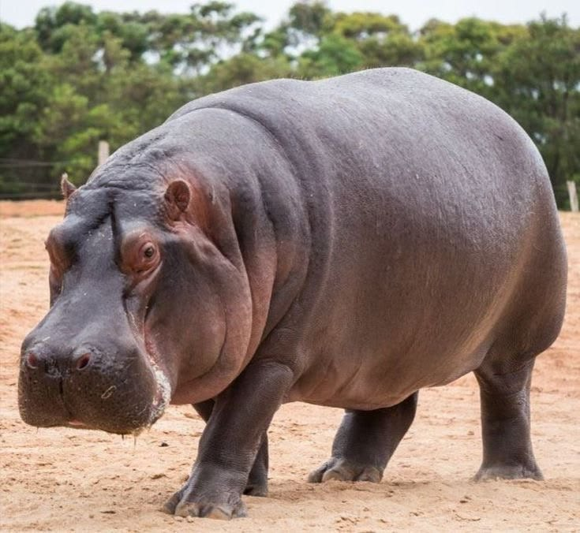
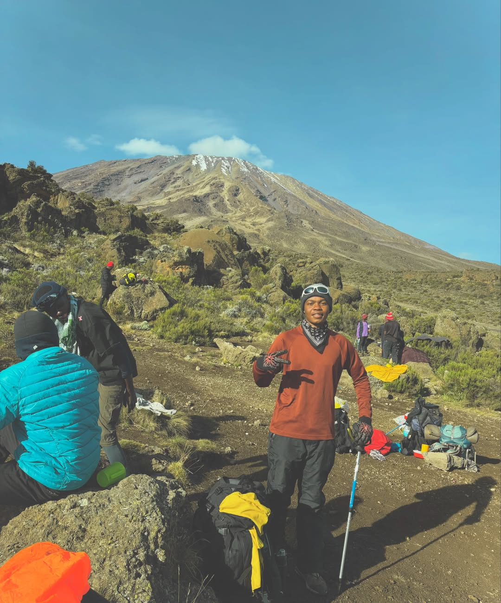
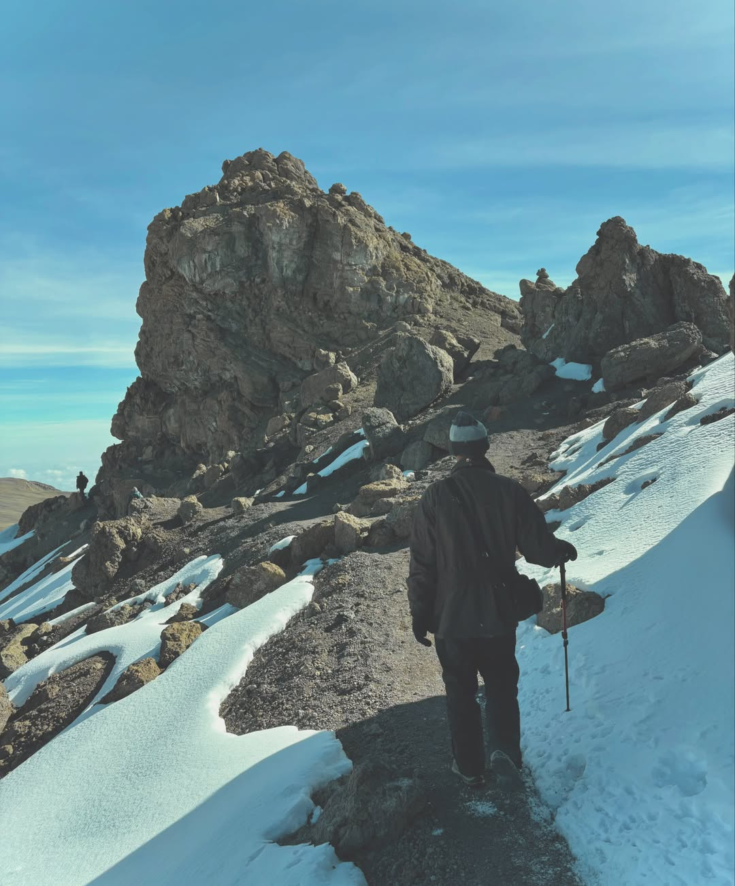
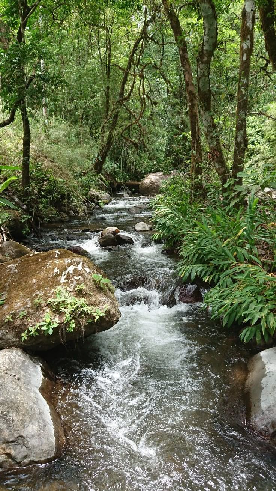
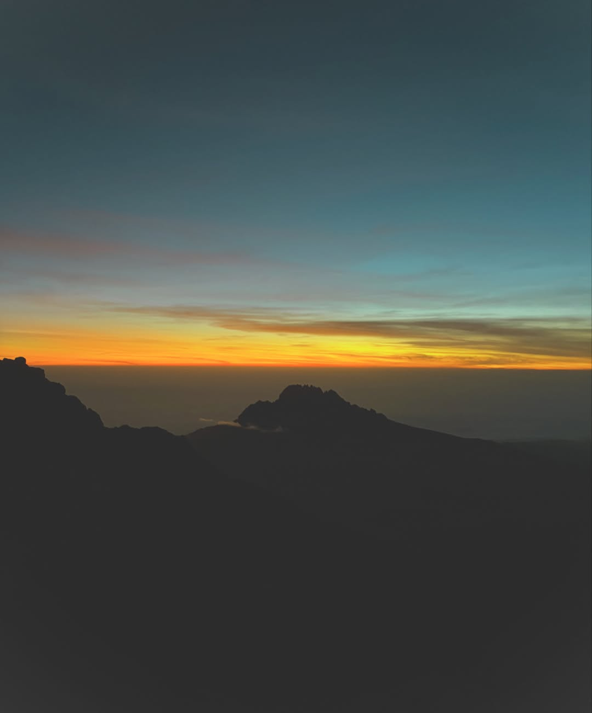

Scan. Learn. Act.
Point your phone at wildlife, learn what it is, and support the young Tanzanians documenting it. WildGuard Society is a youth-led conservation project based in Moshi, Kilimanjaro, Tanzania.
Photograph: African lion. Photo: WildGuard Society library.
What WildGuard has documented so far
Counts verified from the WildGuard species database in October 2026. Field figures for youth engaged, volunteers, and projects are updated by the WildGuard team and are not shown here until they can be verified. These are database counts, not live field counts.
Tanzania's Great Parks
Places our library draws on. WildGuard does not claim a formal partnership with any park.
Serengeti National Park
Home to the Great Migration — 1.5 million wildebeest cross endless plains each year seeking fresh grazing.
Ngorongoro Crater
World's largest intact volcanic caldera — a natural sanctuary for over 25,000 large mammals.
Tarangire National Park
Iconic elephant herds and ancient baobab trees. A birdwatcher's paradise with 550+ species.
Selous Game Reserve
Africa's largest wilderness — 50,000 km² of untouched rivers, woodlands, and savannas.
What We Focus On
The work WildGuard is building towards, in plain terms

Anti-Poaching Awareness
Learning why poaching threatens lions, elephants and rhinos, and sharing that knowledge with more young people.

Habitat Restoration
Why wildlife corridors and reforestation matter for reconnecting fragmented habitats, and what restoration takes.

Community Learning
Sharing conservation skills with local communities, so more people can recognise, value and protect wildlife.

Species Identification
Our scanner identifies wildlife from a photo and opens a field guide, so anyone can learn what they just saw.
Scan. Learn. Act.
Three steps, and the whole point of WildGuard

1. Scan
Use your camera or upload a photo. Our AI identifies the species and retrieves field guide data.

2. Learn
Get habitat details, conservation status, population trends, and voice narration that reads the guide aloud.

3. Protect
Your observations help track populations, detect threats, and guide conservation across Tanzania and beyond.
Recent Field Notes
Field notes: illustrative examples of the kind of notes field teams share. New field notes will appear here with dates and authors.
Get Involved
Join us in protecting wildlife for future generations
Every action counts — scan a species, volunteer, donate, or spread our message.